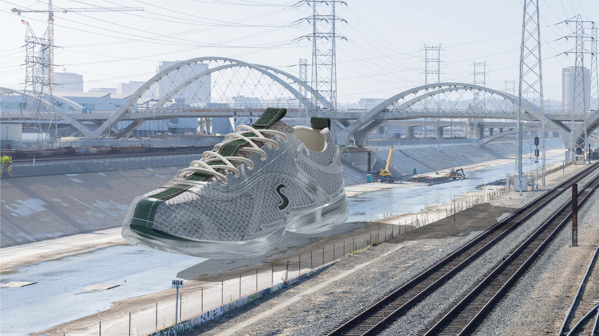
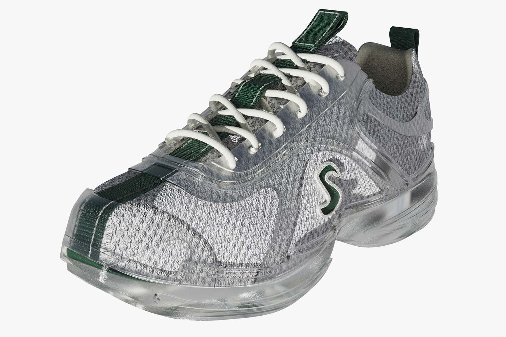
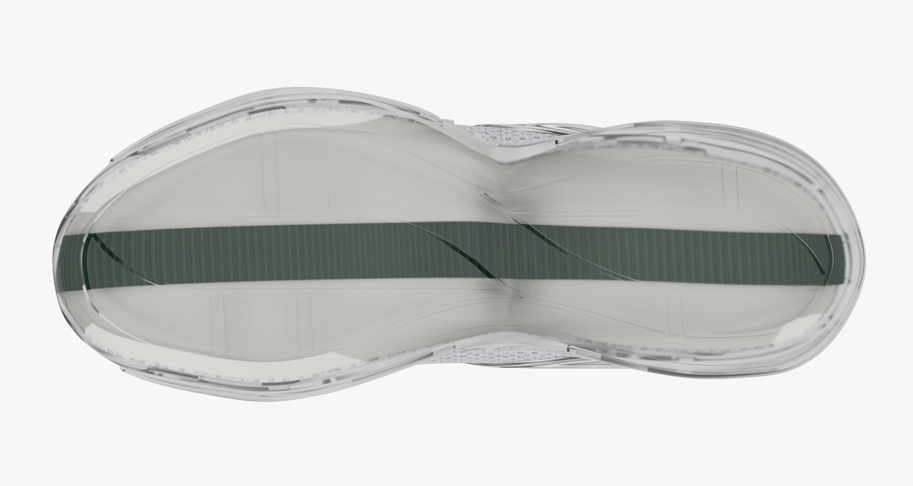
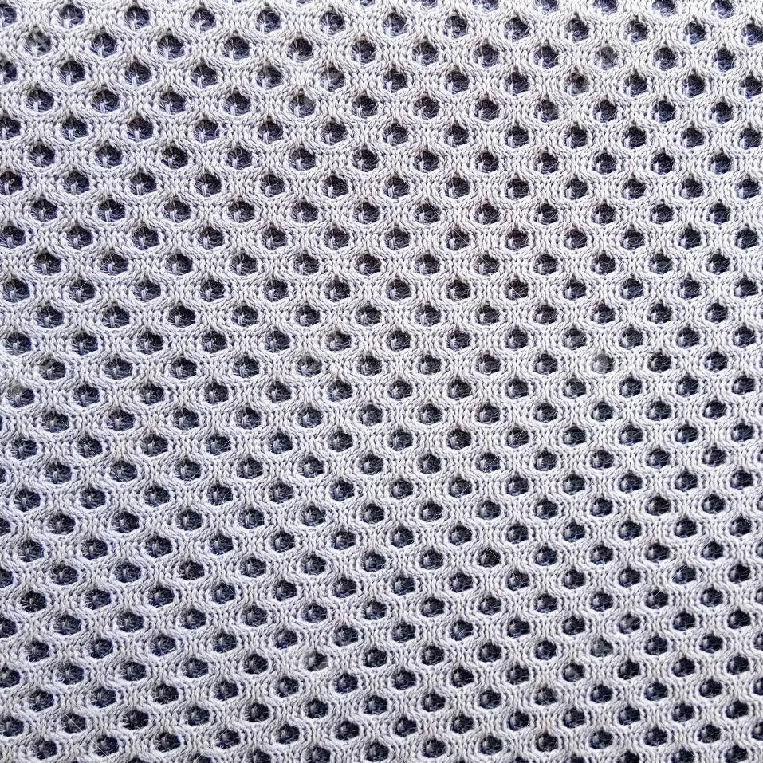
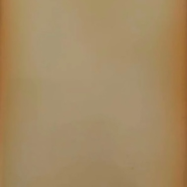
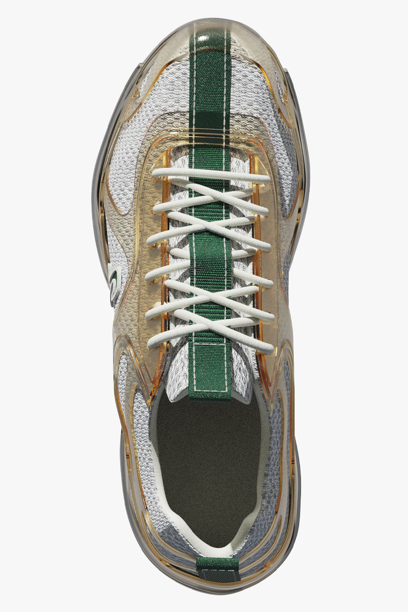

Les matériaux photochromatiques confèrent aux objets un sens d'authenticité en révélant les traces visuelles de leur usage. Pour Struthio, cette transformation donne un caractère unique à chaque paire au fil du temps.
Cette approche fait référence au concept de «Évolvabilité» de la durabilité émotionnel par Design Nine, qui dit pouvoir accentuer l'attachement entre l'objet et son utilisateur.
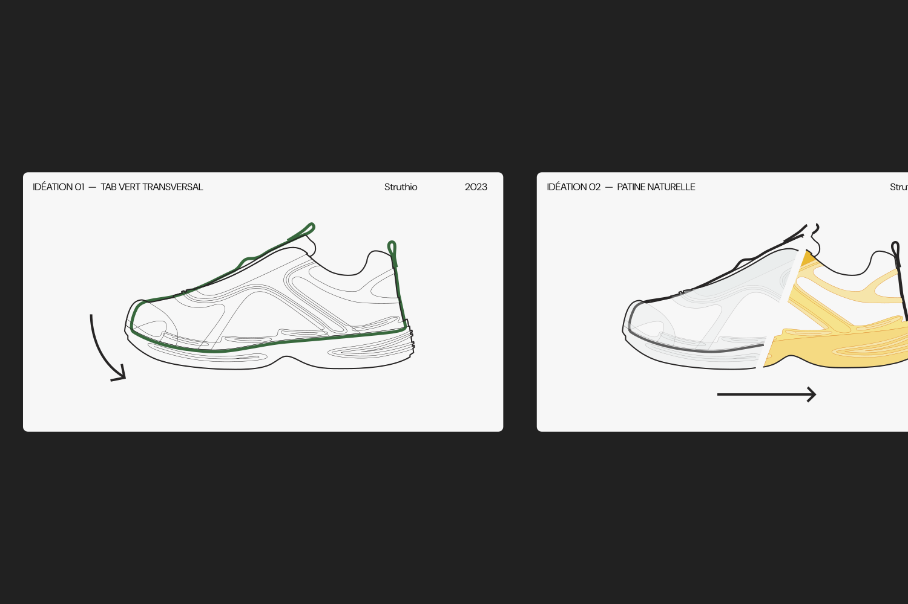
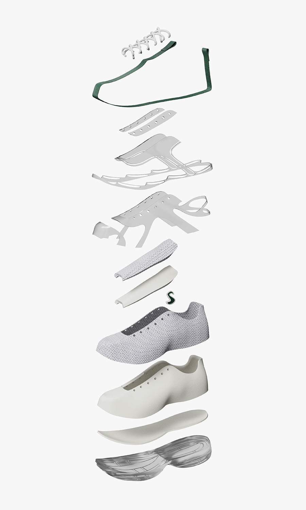
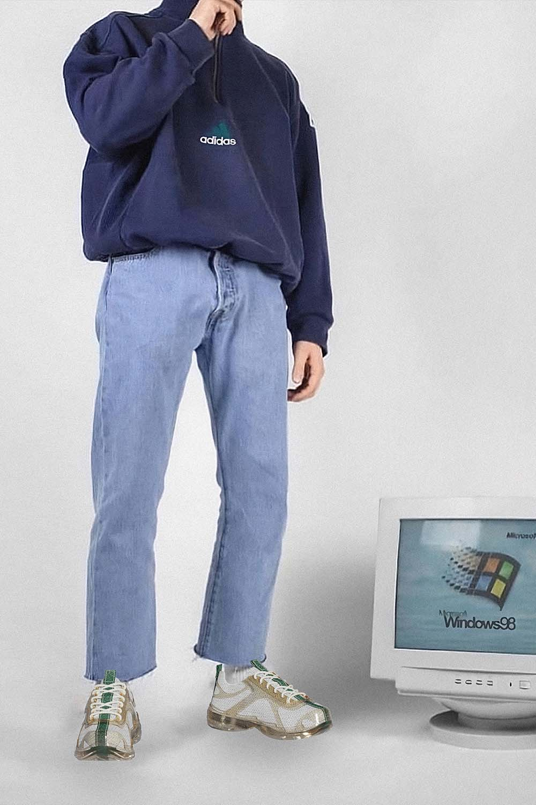
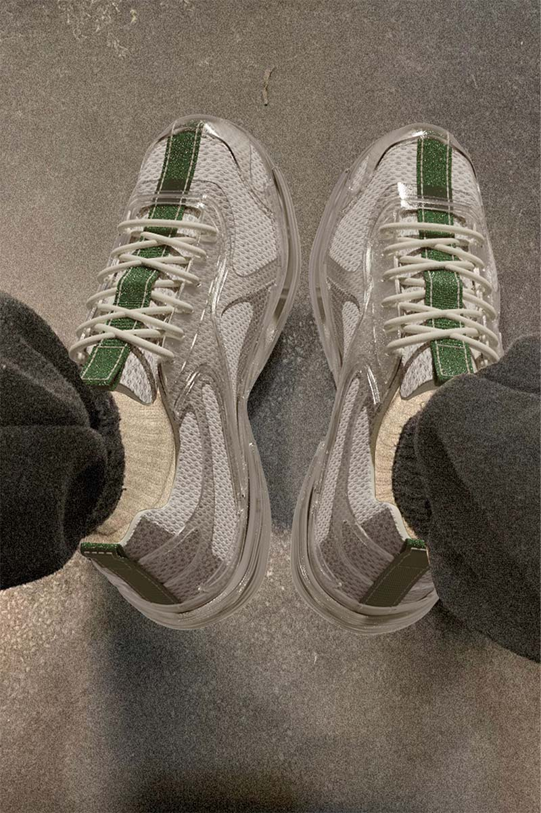
Le jaunissement du plastique, habituellement perçu négativement, est ici réapproprié comme élément visuel.Le résultat donne vie à l'objet, en lui donnant un langage jeune et expérimental.
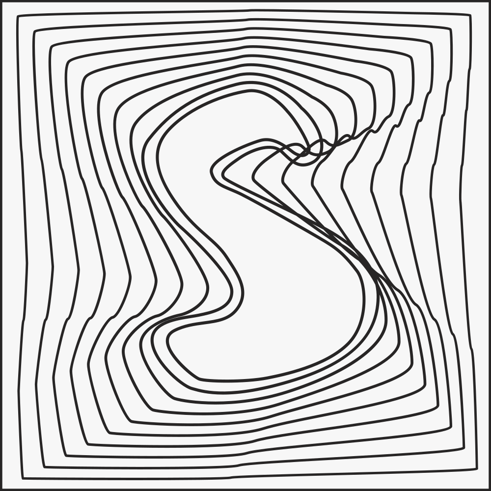
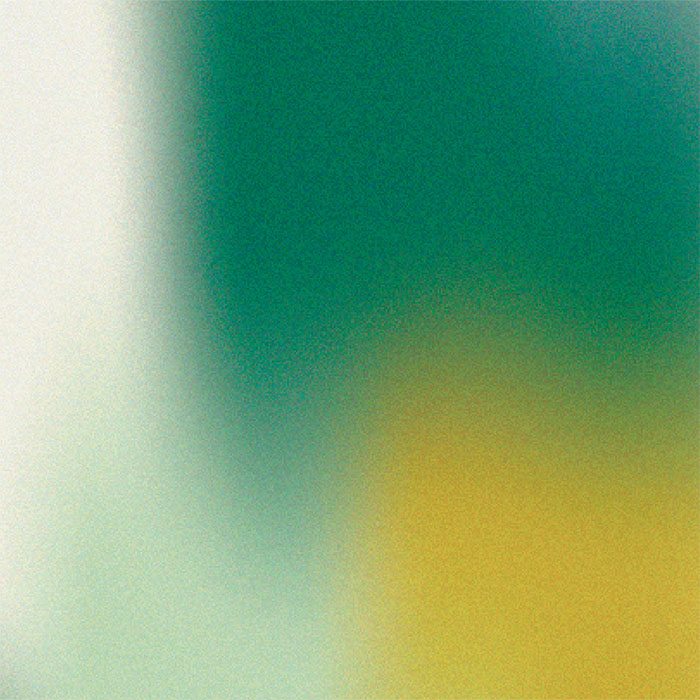